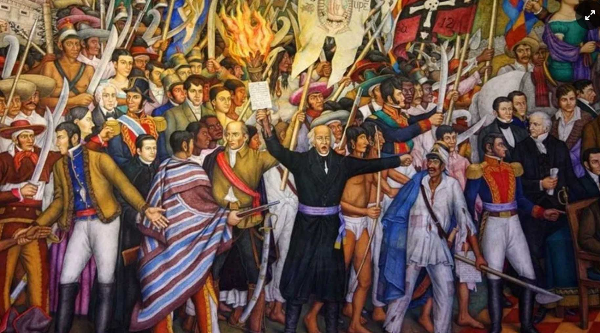
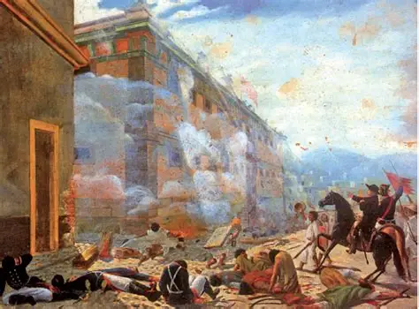
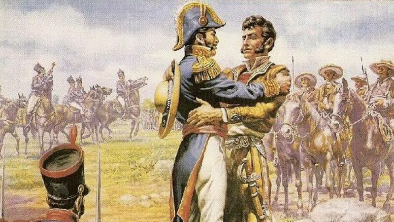
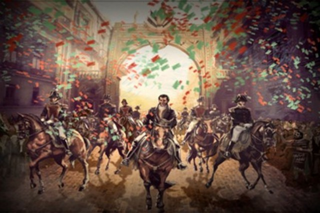
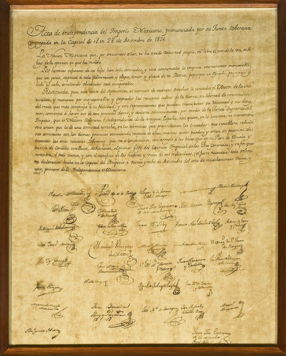

desarrollo
En la madrugada del 16 de septiembre de 1810, el cura Miguel Hidalgo y Costilla, junto a Ignacio Allende y Juan Aldama, al descubrir que la conspiración de Querétaro había sido descubierta por los españoles, decidió adelantar el movimiento de independencia. Desde la parroquia de Dolores, hizo sonar las campanas y convocó a todo el pueblo. Con el estandarte de la Virgen de Guadalupe, arengó a los habitantes a levantarse en armas contra el mal gobierno español, a favor de la independencia y la libertad. Este hecho marcó el inicio formal de la Guerra de Independencia de México, que duraría 11 años. Fue un movimiento social, ya que se unieron indígenas, mestizos y criollos cansados de la opresión.

desarrollo
Doce días después del Grito, el ejército insurgente de Hidalgo, con más de 20,000 hombres, llegó a la ciudad de Guanajuato, una de las más ricas de la Nueva España por sus minas. Los españoles y criollos ricos de la ciudad se refugiaron en la Alhóndiga de Granaditas, un granero convertido en fortaleza, con todas sus riquezas. El edificio era muy difícil de tomar por sus muros de piedra. Los insurgentes intentaron varias veces pero no podían entrar. Fue entonces cuando apareció Juan José de los Reyes Martínez Amaro, mejor conocido como "El Pípila", un minero que se amarró una losa de piedra en la espalda para protegerse de las balas y con una antorcha logró quemar la puerta de madera de la Alhóndiga. Gracias a su valentía, los insurgentes entraron y obtuvieron su primera gran victoria, aunque también hubo un gran saqueo.

desarrollo
Después de 10 años de guerra, ningún bando podía ganar. Vicente Guerrero, líder insurgente en el sur, seguía resistiendo en las montañas de Guerrero. Por su parte, Agustín de Iturbide, un militar realista que antes combatía a los insurgentes, se dio cuenta de que España ya no apoyaba a México y que la independencia era inevitable. Iturbide buscó a Guerrero para proponerle una alianza. Se encontraron en el pueblo de Acatempan. Allí, después de platicar, ambos líderes se dieron un abrazo como símbolo de reconciliación y unión. Este abrazo significó la unión del ejército realista y el insurgente para formar un solo ejército. Acordaron crear el Plan de Iguala, que proclamaba tres garantías: Independencia de México, Religión Católica como única, y Unión de todos los mexicanos sin importar su origen.

desarrollo
Una vez firmado el Plan de Iguala, se formó el Ejército Trigarante, llamado así por las Tres Garantías que defendía. Este ejército, comandado por Agustín de Iturbide y Vicente Guerrero, recorrió todo el país logrando que casi todas las ciudades se unieran a la independencia sin derramar mucha sangre. El 27 de septiembre de 1821, fecha del cumpleaños de Iturbide, el Ejército Trigarante hizo su entrada triunfal a la Ciudad de México. Fue un día de fiesta nacional. Las calles fueron adornadas y miles de personas salieron a recibirlos con alegría, ya que después de 11 años de guerra, por fin se consumaba la independencia. Con este hecho se terminó el dominio español de 300 años sobre México.

desarrollo
Al día siguiente de la entrada del Ejército Trigarante, el 28 de septiembre de 1821, se instaló una Junta Provisional de Gobierno en el antiguo Palacio Virreinal. Esta junta estaba formada por 38 personajes importantes de la época. En una ceremonia solemne, redactaron y firmaron el Acta de Independencia del Imperio Mexicano. En este documento se declaraba oficialmente que México era una nación soberana e independiente de España y de cualquier otra potencia. Se estableció que México sería una monarquía constitucional. El Acta fue firmada primero por Agustín de Iturbide como presidente de la Junta y luego por los demás miembros. Con este documento legal, México nació oficialmente como un país libre e independiente ante el mundo..
